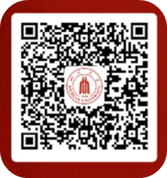

学院通知 · 科研创新
四川大学第九届全球青年学者论坛暨电气工程学院分论坛公告
发布时间：2021-04-30
在120余年的办学历史中，四川大学始终以“海纳百川·有容乃大”的广博胸怀延揽全球英才，以包容态度广聚天下英才。学校正全面实施人才强校战略，积极推进“全球英才汇聚工程”，让更多的优秀学者了解四川大学事业平台、发展机会和生活环境，选择来四川大学发展，成就个人人生理想。 四川大学简介 四川大学是由原四川大学、原成都科技大学、原华西医科大学三所全国重点大学合并而成的高水平研究型综合大学。近年来，学校综合实力、社会影响力和国际竞争力不断提升， 2017 年成为国家 36 所世界一流大学建设名单 A 类高校之一；在全国第四轮学科评估结果中，学校 16 个学科获评 A 类学科，列全国第 9 位，是西部地区唯一进入前 10 的高校。在最新的“世界大学学术排名”中位列全球高校第 163 位，在最新的全球自然指数（ Nature Index ）排名中位列全球高校和研究机构 42 位。 四川大学全力培育高层次人才队伍，全面实施“双百人才工程”，对于入选的人才，四川大学将提供优质的平台资源、优厚的薪酬待遇、充足的科研经费和完备的保障服务。 四川大学电气工程学院简介 四川大学电气工程学院渊源和发展变革可追溯至 1908 年，是我国第一批创办电气工程专业的单位之一，也是四川大学历史最悠久、规模最大的工科类实体性学院之一。学院拥有电气工程一级学科博士学位授权点和控制科学与工程一级学科硕士学位授权点，电气工程及其自动化专业为中国工程教育认证专业并入选国家级一流本科专业建设点名单。学院建有国家双创示范基地“超导与新能源中心”，“四川大学能源互联网研究中心”，全国示范性工程专业学位研究生联合培养基地，四川省智能电网、电能质量与电磁环境学、信息与自动化技术 3 个省级重点实验室，各本科专业均为国家级“卓越工程师教育培养计划”试点专业。 当前，学院以“双一流”建设为契机，依托能源电力行业优势，以“信息 + 、材料 + 、医学 + ”为抓手，重点建设有川大特色的强电学科。学院着力在 能源电气工程、控制科学与工程、人工智能与大数据 等领域打造高素质、国际化的教师队伍与科教融合团队，培养拔尖创新人才，大力推进基础创新与成果转化，扎实推进多学科交叉融合和协同创新，为新时代能源体系转型、工业及信息产业升级提供人才与技术支撑。 论坛日程安排 主论坛： 2021 年 6月1 日上午 分论坛： 2021 年 6月1 日 下午（以具体时间安排为准） 形式：本届论坛采取线上（ ZOOM ）线下结合的方式进行。 申请条件： 1. 原则上年龄不超过 40 周岁； 2. 获得国内外知名大学博士学位，具备较高学术造诣和发展潜力，在相关学科领域取得一定的成绩； 3. 本次论坛也特别欢迎各类人才、高被引科学家等优秀青年学者参会交流。 报名方式 1. 报名活动请上传简历 2. 学院甄选报名信息后，将向意向学者发送会议入口，请耐心等待 3. 报名成功后可添加活动群 （说明：已在学校公告报名者无需重复报名） 联系人：邓老师 联系电话： 86-28-85405101 联系邮箱： dengqinghua@scu.edu.cn
